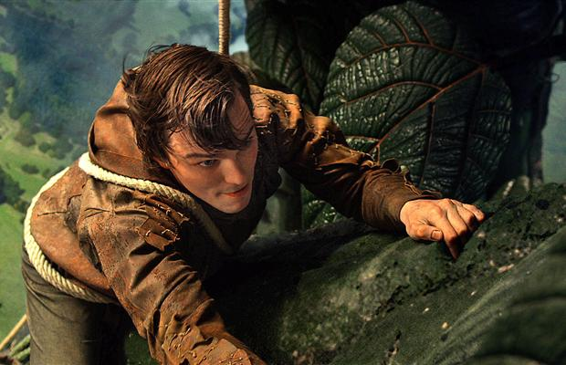

Movie Review: Jack The Giant Slayer
There is a little bit of fee-fi-ho-hum in Jack the Giant Slayer, an inflated big-budget special-effects thingamajig that’s based on what is, frankly, one of the odder fairy tales in the canon. A country bumpkin trades his family’s cow for a handful of magic beans that produce a beanstalk that leads to a giant’s home in the sky. What keeps it floating there? And what is the message we’re meant to derive: That meddling in livestock trading is not for amateurs?
Jack the Giant Slayer forestalls all that by becoming a story of a princess and a rescue, gussied up with a lot of special effects that are, happily, much more accomplished than what they looked like in the trailers. The race of giants in this film — led by a two-headed ogre whose main head is played by Bill Nighy and whose assistant face sits on his shoulder and nags, like a particularly repulsive back seat driver — is quite believable, even if the writers never explain the physics, or even the narrative logic, of up-in-the-air land.
It starts with feckless young Jack (feckless young Nicholas Hoult, who resembles a young Pete Postlethwaite) going into town to sell his uncle’s horse. He comes home with a bag of beans, given to him by a monk, that he can later trade for cash. “Monks don’t have any money,” his uncle fulminates. “They’re monks,” which isn’t a bad explanation.
Along the way, Jack runs into Princess Isabelle (the fetching Eleanor Tomlinson), who has taken to wandering the streets of the land of Cloister — Isabelle has had a sheltered childhood — trying to learn the ways of her people. This puts her at odds with her father, King Brahmwell (Ian McShane), who wants her to marry the evil Roderick (Stanley Tucci in a fright wig, answering for once and all the question, what would Stanley Tucci look like as a hippie? Answer: Alice Cooper).
Cloister lives under the spell of old King Erik, who long ago defeated the race of giants who live in the sky and inspired the childhood rhyme, “Fee-fi-fo-fum, ask not whence the thunder comes.” (The old words, which essayed to rhyme “fum” with the politically unpalatable “I smell the blood of an Englishman,” is nowhere to be heard, and a relief it is too.) Aside from magic beans, there is also a magic crown, made — if I heard correctly — by boiling a giant and turning his fluids into a headpiece. In any event, the beans and the crown are all locked away, but Roderick has plans for them, as villains will.
Eventually, Isabelle is hauled into the clouds by a fast-growing beanstalk and all the king’s men have to go up and save her. These include Jack and a royal assistant named Elmont (Ewan McGregor), who would have made an ideal alternative love interest. However, Jack the Giant Slayer is the kind of movie that has lots of everything, including several villains, multiple heroes, a host of giants and a couple of endings. Elmont is used strictly to represent noble courage, freeing Jack to be adorably shy.
The world in the sky is nicely imagined by director Bryan Singer, who calls on his X-Men x-pertise to give us a race of really ugly 30-metre-tall monsters in well-rendered 3-D. They eat humans, and there’s a nice scene of the ugliest one preparing dinner and picking his nose at the same time. The cook is always a dodgy role, but this is disgust at a higher level. Children should be delighted.
It is a festival of CGI, set in a world reminiscent of Skull Island from King Kong, crossed with Lord of the Rings with maybe a bit of Easter Island thrown in. It sounds epic, but Jack the Giant Slayer is really a small adventure, stretched out by a good half-hour and enlarged to summer blockbuster scope. It’s not every day you get a film about giants that’s too big, but there you go. I smell the blood of a Hollywood man.